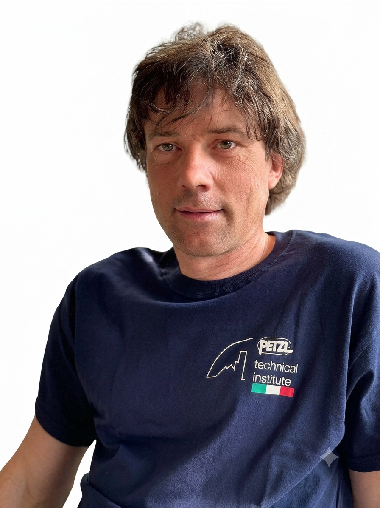

A chi è rivolto il PTI?
I moduli di formazione PTI si rivolgono a rivenditori e utilizzatori e affrontano un argomento tecnico specifico combinando approccio pratico e formazione teorica.
I corsi offerti sono rivolti a:
- 1. Supervisori di persone che utilizzano DPI
- 2. Rappresentanti tecnici commerciali, organizzatori di test sui prodotti, rivenditori
- 3. Istituti Tecnici Petzl - Petzl Technical Partners, formatori della rete Petzl Solutions
- 4. Responsabile del controllo dei DPI contro le cadute dall'alto, gestori di flotte di DPI
- 5. Forze speciali (utilizzatori di elicotteri, unità tattiche)
- 6. Vigili del fuoco, rivenditori di prodotti antincendio e di soccorso
- 7. Società di noleggio DPI, supervisori attività, società e professionisti dell'arrampicata e dell'alpinismo, gestori di palestre, tracciatori di percorsi
Presentazione corsi centro di formazione
IRATA
Industrial Rope Access Trade Association
Livello 1, livello 2 e livello 3
▶ Guarda su YouTube
Cos'è il PTI e quali corsi offre?
I Petzl Technical Institutes (PTI) sono il punto di riferimento tecnico per ogni paese, rappresentano Petzle forniscono informazioni tecniche, moduli di formazione e risposte alle domande dei clienti nella loro regione.
Attualmente ci sono più di venti Petzl Technical Institutes che formano una rete in crescita in tutto il mondo.
Il nostro centro di formazione è certificato PTI dal 2017 e eroga i corsi PTI, tra i quali i principali sono:
- 1. Revisioni periodiche DPI Petzl
- 2. Aggiornamento revisioni periodiche DPI Petzl
- 3. Modulo Rivenditori PRO liv. 1
- 4. Modulo Rivenditori PRO liv. 2
- 5. Modulo Rivenditori PRO liv. 3
- 6. Utilizzo KIT JAG RESCUE
- 7. LEZARD utilizzatori
- 8. LEZARD formatori
- 9. Prusik Meccanico ZIG ZAG
Dove svolgiamo i corsi PTI?
I corsi si svolgono presso il nostro Centro di Formazione a Torino.
Perché dovresti fare un corso PTI?
Petzl Solutions sviluppa e distribuisce, a livello internazionale, l'esperienza Petzl in termini di formazione, sperimentazione e progettazione di soluzioni tecniche.
Questo dipartimento interviene per formare gli attori della verticalità nella consulenza, nell'uso e nella gestione dei Dispositivi di Protezione Individuale (DPI).
Il nostro centro di formazione è anche un luogo in cui discutere le tecniche per l'utilizzo dei nostri prodotti.
Il know-how di Petzl Solutions in poche parole
- 1. Conoscenza dei prodotti Petzl e del loro utilizzo
- 2. Competenza tecnica disponibile presso Petzl
- 3. Forti competenze nell'analisi dei rischi
- 4. Disponibilità di strumenti di test unici
- 5. Offerta di moduli formativi
- 6. Reale competenza pedagogica
- 7. Condivisione dell'esperienza sul campo
Formatori PTI

Guida Aplina
Lingue: IT - FR
Guida Aplina
Lingue: IT - EN - FR

Guida Aplina
Lingue: IT - FR

Guida Aplina
Lingue: IT - FR